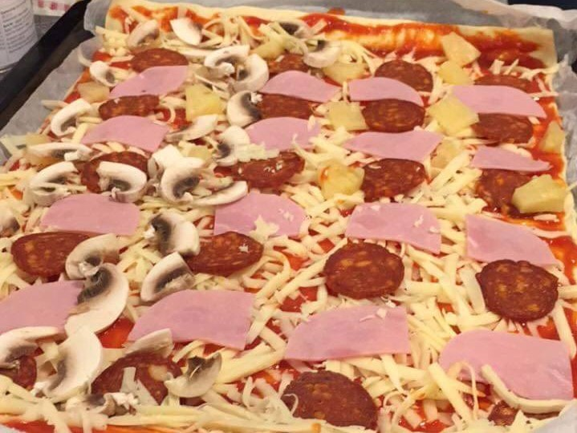

INGREDIENSER
- 1 stk ferdigpizadeig
- 1 boks pizzasaus
- 400 g revet ost
- 1 pakke pepperoni
- 1 pakke skinke
- 1 stor soppt
- 2 ss frisk oregano
SLIK GJØR DU DET
- Rull ut deigen og ha den over på en langpanne.
- Fordel tomatsausen utover deigen
- Dryss over revet ost og ha på pepperoni, sopp og skinke
- Stek pizzaen midt i ovnen på 225°C i ca 15 minutter.
Server toppet med oregano og gjerne en frisk salat med en god dresing som tilbehør. Bon appétit!